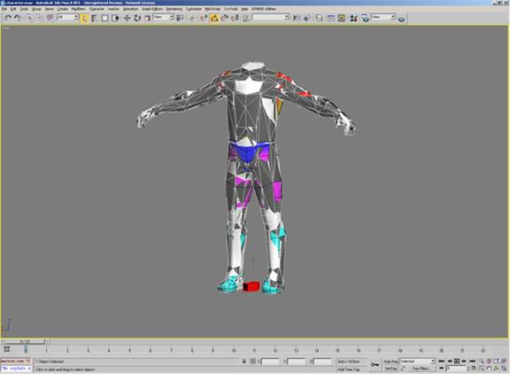
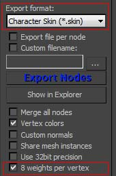
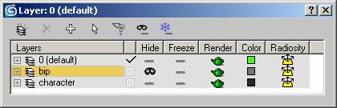
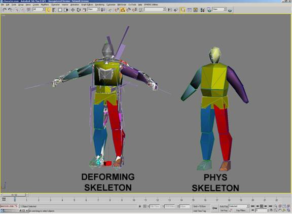
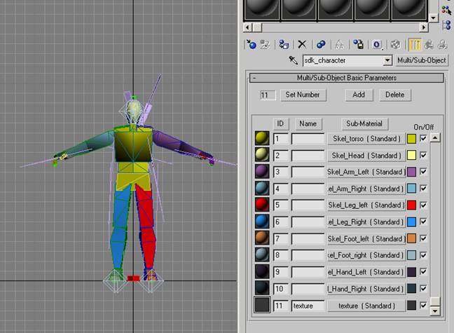
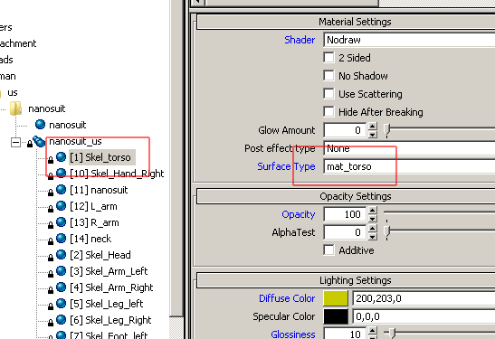

Overview
This section covers how to create characters and export from 3ds Max.
Required Files
Before you read further, be sure that you have downloaded the compressed file at the top of DCC Setup (animated) for reference.
For the most part, CHR is the CRYENGINE character file format. There is also CGA, which will be mentioned later. For a complete overview of the file formats used in CRYENGINE, see Art Asset File Types Reference.
Note: In addition to dealing with the SDK example files, this tutorial also has notes for those creating their own characters from scratch.
File Layout
Important Note
Naming of bipedal hierarchies does not need to match 3ds Max. This is only necessary if you want to make use of the automated IK for legs and even this can be changed in the file in which you define the parameters for IK, the .chrparams file.
Character.max Layout (LOD0/2/3)
The following is a brief explanation of the nodes in this Max file. There are render meshes, a live deforming skeleton, and a live phys skeleton.
Render Meshes:
- These are the mapped character geometries that you see in the game.
- The LODs (Level of Detail) are meshes with lower polygonal resolution that automatically fade in based on your distance from the character (in the game world).
- The material on this mesh should correspond with a MTL file in the character's folder:
- sdk_character.mtl in the example files.
- Render Mesh Nodes:
- $character
- $character_LOD2
- $character_LOD3
Live Deforming Skeleton:
- This is the skeleton that deforms the render meshes.
- The bone geometry of this skeleton is used for hit detection and physics in the live character (non-ragdoll).
- The materials applied to this skeleton are used for hit detection, to tell the engine what part of the character you have hit.
- There are attachment nodes in this hierarchy.
- Example: $weapon_bone; this is where the weapon will be attached in the engine.
- This is a basic Biped Skeleton, but other than attachment nodes, there are some additional nodes used for automatic foot plant and gait detection
- $Bip01 L Heel and $Bip01 L Toe0Nub on the left foot (also present on the right foot).
- Live Deforming Skeleton Nodes:
- Hierarchy of nodes under and including $Bip01.
Live Phys Skeleton:
- Think of this skeleton as a set of switches; a node being present in this skeleton signifies that it's counterpart in the live deforming skeleton is physicalized in the engine while the character is alive.
- Each node in this skeleton also stores physical properties for it's corresponding bone in the deforming hierarchy; this is stored in the phys bone's IK properties.
- Live Phys Skeleton Nodes:
- Hierarchy of nodes under and including $Bip01 Pelvis Phys.
Character_LOD1.max Layout (LOD1)
The following is a brief explanation of the nodes in this Max file. There are render meshes, a ragdoll deforming skeleton, and a ragdoll phys skeleton.
Render Meshes:
- This is the mapped character geometry that you see in the game.
- Render Mesh Nodes:
- $character_LOD1
Ragdoll Deforming Skeleton:
- This skeleton hierarchy must match the hierarchy of the LOD0 skeleton exactly (character.max deforming skeleton).
- The bone geometry of this skeleton is used for the ragdoll physics.
- This geometry should consist of spheres, boxes and capsules.
- Arbitrary geometry is supported, but could slow performance.
- The materials applied to this skeleton are used for hit detection, to tell the engine what part of the character you have hit.
- Ragdoll Deforming Skeleton Nodes:
- Hierarchy of nodes under and including $Bip01.
Ragdoll Phys Skeleton:
- As with the LOD0, think of this skeleton as a set of switches, a node being present in this skeleton signifies that its counterpart in the ragdoll deforming skeleton is physicalized in the engine, while the character is in a ragdoll state.
- Each node in this skeleton also stores physical properties for its corresponding bone in the deforming hierarchy, this is stored in the phys bone's IK properties.
- Ragdoll Phys Skeleton Nodes:
- Hierarchy of nodes under and including $Bip01 Pelvis Phys.
Head.max Layout
Following is a brief explanation of the nodes in this Max file. There are render meshes, morph targets, and a deforming skeleton.
Render Meshes:
- This is the mapped character geometry that you see in the game.
- Render Mesh Nodes:
- $head
Morph Targets:
- These are the morph targets or blend shapes that drive the facial deformation of the render mesh.
- Morph Target Nodes:
- $ Brow_lowerer
- $ Jaw_dropper_01
- $ Jaw_pusher
Deforming Skeleton:
- This skeleton hierarchy must not have more members than the deforming skeleton of the character you will attach the head to (character.max).
- The skeletons do not have to match, but this SLAVE skeleton must have lesser bones than the MASTER skeleton.
- Arbitrary geometry is supported, but could slow performance.
- Deforming Skeleton Nodes:
- Hierarchy of nodes under and including $Bip01.
The Render Mesh
Load the character.max file; this is what it should look like when loaded:

These are the render meshes; you are currently viewing all three (LOD0/2/3).
Things to keep in mind when creating the render mesh of a character:
- Its pivot should be at 0,0,0.
- The character must be facing down the positive Y axis.
- It should have no transformations applied to it (pos, rot, scale).
- If it does, apply a Reset XForm before you start.
- Make sure the model matches the joints in the skeleton.
- The live deforming skeleton should be in its bind pose when you apply the Skin modifier.
To preview the skinning you see in CRYENGINE in Max:
- Use the CrySkin Modifier to preview Spherical Skinning in 3ds Max. If you are already using the regular Skin modifier, it is easy to switch. Just save your weightmap (.env), delete the old skin modifier in Figure mode, add CrySkin with the same bones as before and load your saved weightmap.
- Max Exporter for CRYENGINE 3.8.4 and later has an option to support up to 8 influences per vertex instead of 4. Make sure you set the "Bone Affect Limit" to 8 in your CrySkin/Skin Modifier. Please also activate the checkbox for "8 weights per vertex" in the CRYENGINE Exporter Utility:

If you set the weight count to a higher value, the CRYENGINE Resource Compiler will use no more than 8 bones anyway, so you might not get consistent results from what you see in the 3ds Max viewport and in CE Sandbox.
When creating your own character, you do not need to match your render mesh to the SDK skeleton. However, keep in mind that this means your character cannot use the existing Crysis animation set. If you do want to use a custom character/skeleton, please look into how difficult it is to create all the animations needed to get a custom skeleton moving around with decent motion fidelity in a next-gen game; it can include hundreds or thousands of animation assets.
Model your character to fit this skeleton, then use Skin (or Physique) to weight your render meshes to the deforming skeleton.
Deforming and Phys Skeletons
Character assets are broken up into a main character file (character.max) and an LOD1 file (character_LOD1.max). Each file has a deforming and phys skeleton. It is critical to understand the role of each skeleton in each file.
The live deforming and live phys skeleton in the main file (LOD0/2/3) store the hit detection and physics properties for the live skeleton, while the ones in the LOD1 max file store the hit detection and phys properties for the ragdoll.
Main Character File (character.max)
Character Render Mesh weighted to Live Deforming Skeleton, whose physical properties are stored in the Live Phys Skeleton.
LOD1 Character File (character_LOD1.max)
Character Render Mesh weighted to Ragdoll Deforming Skeleton, whose physical properties are stored in the Ragdoll Phys Skeleton.

Open the Layer Manager and you will see that there is a layer called "bip" that is hidden; hide default and un-hide bip, you will then see this:

These are the live deforming and live phys skeleton of the LOD0/2/3 file (character.max).
The Deforming Skeletons
The deforming skeleton is responsible for the following items:
- This is the skeleton that deforms the render meshes.
- The bone geometry of this skeleton is used for hit detection and physics in the live character (non-ragdoll).
- The materials applied to this skeleton are used for hit detection in order to tell the engine what part of the character you have hit.
- There are attachment nodes in this hierarchy.
- Example: $weapon_bone, this is where the weapon will be attached in the engine.
- This is a basic Biped Skeleton, but other than attachment nodes, there are some additional nodes used for automatic foot plant and gait detection.
- $Bip01 L Heel and $Bip01 L Toe0Nub on the left foot (also present on the right foot).
- Deforming Skeleton Nodes:
- Hierarchy of nodes under and including $Bip01.
- The Ragdoll Deforming Skeleton, located in the LOD1 asset file, is used for collision and hit detection in the ragdoll.

The deforming skeleton 3ds Max material setup for a Crysis humanoid character.
Material Setup
As you can see, the deforming skeleton has different sub-materials assigned to it. These are used for hit detection in the engine. In Crysis, the first 10 sub-materials were devoted to hit locations, and any after that were used for textures. This number will vary from project to project.

The sub-materials in the engine correspond to surface types defined by code.
If you open sdk_character.mtl in the Sandbox Material Editor, you will see that the sub-materials used for hit detection are assigned to corresponding surface types and they are also assigned the nodraw shader.
There are some things to keep in mind when altering or replacing the deforming skeleton with something of your own:
- Keep your bones and rig elements in the bip layer as this allows animators to easily hide the rig and CryTools to automatically manage rig visibility.
- If you are using a new or custom skeleton, you should be prepared to recreate the full locomotion animation set to support its moving in the game.
- The skeleton must face down the +Y axis.
- Nodes in the hierarchy should have no scale applied to them.
- All bones/nodes should have 100% XYZ scale.
- There is a bug in Max where mirroring bones causes them to have a -100% scale; be on the lookout for this. Use the mirror function in Bone Tools before converting them to editPoly.
- The root bone pivot should be placed at 0,0,Z in the world coordinate space.
- The pivot of the root bone must have its positive X looking forward, positive Y looking left (of the facing direction of the character), and positive Z looking up vertically.
- No bones can be outside of the skeletal hierarchy; the exporter starts at one root bone and steps through all its children.
- This also means that no external bones can be constrained into the skeleton.
- If you want bones to act like they are outside the skeleton, you can change their transform inheritance on Command Panel -> Hierarchy -> Link Info -> Inherit.
- Once they are not inheriting transformations from their parents, you can drive them with constraints as if they were outside the hierarchy.
- The bones of the spine and head need to match the orientations and names of the biped skeleton for lookIK to work.
- The names are Bip01 Head, Bip01 Neck, Bip01 Spine3, and Bip01 Spine2.
- If you want to have rig elements inside the hierarchy, keep them to the periphery and use the prefix "_" to comment them out of export.
- The "_" prefix effectively comments an object and all of its children out on export.
- If you must have them in the hierarchy, and they are exported into the engine, try not to have them be splines or shapes; convert them to polygons.
- Keep in mind that any rig elements inside the hierarchy that are exported will be null bones in the engine and will take up memory/CPU time, so do this sparingly.
- It's a good idea to put the hit material submats first for humanoid skeletons that you will re-use. This way, the numbers will not change based on how many different texture submats you use.
- Make sure that all the models are NOT linked to anything. Having, for instance, the pants of your character linked to its hands will cause an error in the exporter, causing it to create multiple skeletons.
Ragdoll Deforming Skeleton (LOD1)

Above, you see the ragdoll deforming skeleton and ragdoll phys skeleton from the LOD1 file. The deforming skeleton in the LOD1 asset file is used for collision/hit detection in the ragdoll. This is called the ragdoll deforming mesh. It can be made from arbitrary geometry, like the live deforming skeleton, but it is better to make it from capsules, boxes, and spheres.
Bipeds can be finicky. The best way to create your own custom ragdoll deforming skeleton is to align capsules and boxes to your existing skeleton, and then via editPoly, attach them to your node and delete the old geometry.